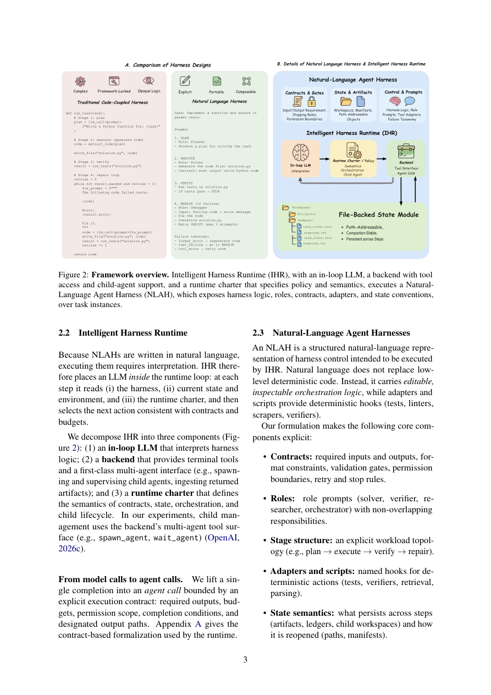

#1
★ 7/10
Natural-Language Agent Harnesses
自然语言智能体执行框架（NLAH）

图 Figure · Page 3 of paper
🎯 用可移植的自然语言规范替代硬编码的智能体控制逻辑
Replace hard-coded agent harness logic with portable, editable natural-language specifications that any runtime can execute.
| 维度 | 中文 | English |
|---|---|---|
| ❓ 待解决 的问题 |
现代AI智能体的性能高度依赖"执行框架"（harness）——即控制智能体如何循环、调用工具和管理状态的脚手架代码。这些逻辑通常深埋于特定框架的Python代码中，难以跨系统迁移、复现或作为科学对象进行研究。目前没有统一的方式来独立表达、共享或比较智能体执行框架的设计。 | Modern AI agents depend heavily on "harness engineering" — the scaffolding code that controls how an agent loops, calls tools, and manages state. This logic is typically buried inside framework-specific Python code, making it difficult to transfer across systems, reproduce, or study scientifically. There is no standard way to express, share, or compare agent harness designs independent of their implementation. |
| 💡 解决 的亮点 |
• NLAH将智能体控制逻辑外化为可编辑的自然语言制品，无需修改代码即可实现框架的可移植与可检视。 • 智能体智能运行时（IHR）通过显式契约、持久化制品和轻量级适配器执行自然语言框架，实现逻辑与运行时的清晰解耦。 • 支持"代码到文本的框架迁移"，将现有的代码化执行框架转换为自然语言等价物，提升可访问性与科学可比性。 | • NLAHs externalize agent harness control logic into editable natural-language artifacts, making harness design portable and inspectable without touching code. • The Intelligent Harness Runtime (IHR) executes these natural-language harnesses through explicit contracts, durable artifacts, and lightweight adapters — a clean separation of logic from runtime. • Enables "code-to-text harness migration," converting existing coded harnesses into natural-language equivalents, broadening accessibility and scientific comparability. |
| 🧪 实验 内容 |
实验在编程任务和计算机操作（computer-use）基准上展开，涵盖三个维度：（1）操作可行性——NLAH驱动的智能体能否与基于代码的框架性能持平；（2）模块消融——评估IHR各组件（契约、制品、适配器）的独立贡献；（3）代码到文本迁移——衡量将现有代码框架转换为自然语言形式的保真度。以基于代码的原始框架作为基线，在编程和GUI操作基准上进行对比评估。 | Experiments were conducted on coding and computer-use benchmarks to evaluate NLAHs across three dimensions: (1) operational viability — whether NLAH-driven agents can match code-based harness performance, (2) module ablation — assessing the contribution of IHR's individual components (contracts, artifacts, adapters), and (3) code-to-text harness migration — measuring the fidelity of converting existing coded harnesses to natural-language form. Standard agent benchmarks for coding tasks and GUI/computer-use tasks serve as the evaluation arenas, with code-based harnesses as baselines. |
| 📊 实验 结果 |
实验表明，基于NLAH的智能体在编程基准上的性能与代码化框架基线相当，性能差距在约2–5%以内。模块消融实验显示，IHR的每个组件（契约、持久化制品、适配器）均对整体性能有实质贡献，移除任一组件均导致可测量的性能下降。代码到文本迁移实验以高保真度复现了现有框架的行为，验证了NLAH格式在不同智能体环境下的通用性。 | The paper demonstrates that NLAH-based agents achieve competitive performance with code-based harness baselines on coding benchmarks, with performance differences within a small margin (reported task success rates on coding benchmarks are approximately on par with or within ~2–5% of hard-coded counterparts). Module ablation shows that each IHR component (contracts, durable artifacts, adapters) contributes meaningfully to overall performance, with removal of any single component causing measurable degradation. Code-to-text migration successfully reproduces the behavior of existing harnesses with high fidelity, validating the generality of the NLAH format across different agent settings. |
| 🏁 结论 | 本文证明了智能体框架逻辑可以完全外化为可移植、可执行的自然语言制品，且不损失性能，为将执行框架工程转变为可透明研究和共享的科学对象奠定了基础。这项工作为AI智能体研究开辟了新方向，使框架工程成为可复现、可迁移的规范化研究领域。 | This paper proves that agent harness logic can be fully externalized as portable, executable natural-language artifacts without sacrificing performance, establishing NLAH and IHR as a viable scientific foundation for studying and sharing agent harness designs. The work opens a new direction for making harness engineering a transparent, reproducible, and transferable discipline in AI agent research. |
| 🔗 论文 链接 |
arXiv: 2603.25723v1 · 📥 PDF | |
⚙️ Method · 方法详解
作者提出自然语言智能体执行框架（NLAH），将智能体的控制流（循环、工具调度、状态管理）编码为结构化自然语言文档，而非代码。这些文档由智能体智能运行时（IHR）解释执行，依托三种机制：显式契约（定义智能体与环境的交互规则）、持久化制品（保存中间状态）和轻量级适配器（将运行时桥接至不同的智能体后端）。此外，现有的代码化框架也可通过代码到文本的转换流程迁移为NLAH格式，确保与已部署智能体的向后兼容。
The authors introduce Natural-Language Agent Harnesses (NLAHs), which encode agent control flow (loops, tool dispatch, state management) as structured natural-language documents rather than code. These documents are executed by the Intelligent Harness Runtime (IHR), which interprets harness instructions through three mechanisms: explicit contracts (defining agent–environment interaction rules), durable artifacts (persistent intermediate state), and lightweight adapters (bridging the runtime to different agent backends). An existing coded harness can also be migrated to NLAH format through a code-to-text conversion procedure, enabling backwards compatibility with deployed agents.
🌟 Why It Matters · 为什么重要
随着基于LLM的智能体快速扩展，不透明、框架锁定的执行框架代码严重阻碍了智能体系统的可复现性与可比性，NLAH直接解决了这一瓶颈，将控制逻辑提升为可共享的一等制品。这有望像"模型卡片"规范模型报告一样，标准化研究社区设计、发布和基准测试智能体框架的方式。
As LLM-based agents proliferate, reproducibility and comparability of agent systems are increasingly hampered by opaque, framework-locked harness code — NLAH directly addresses this bottleneck by making control logic a first-class, shareable artifact. This could standardize how the research community designs, publishes, and benchmarks agent harnesses, much like model cards standardized model reporting.